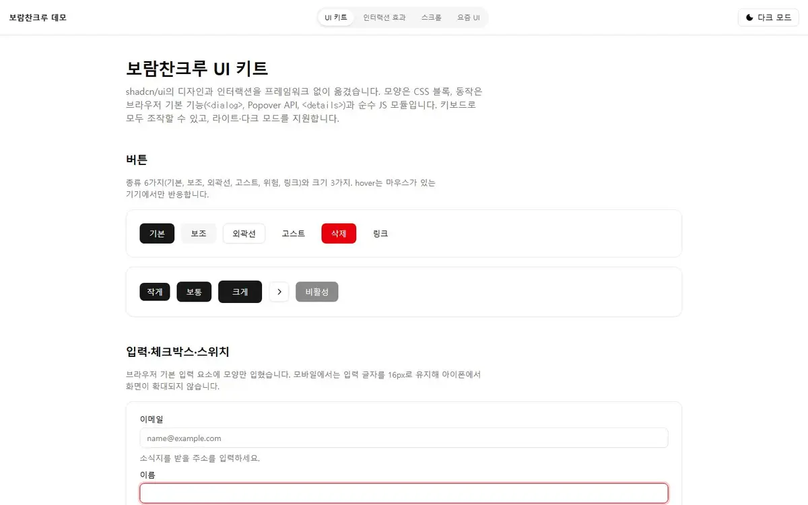
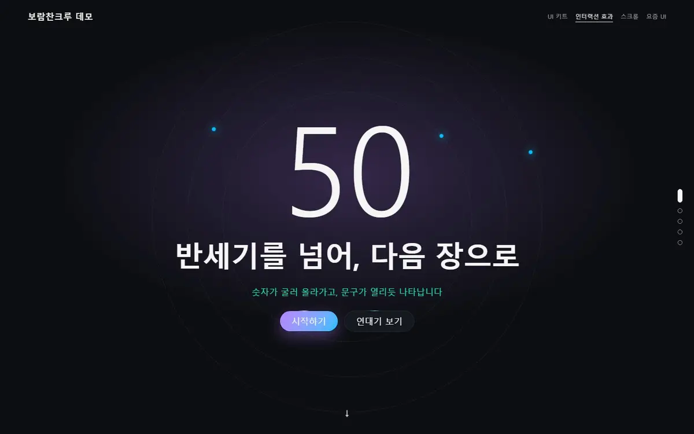
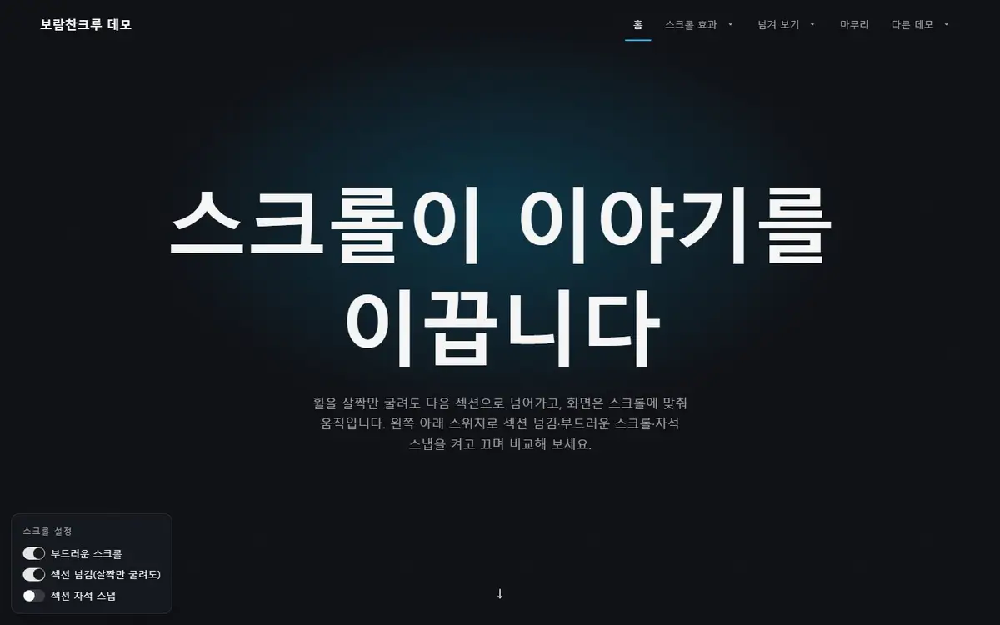
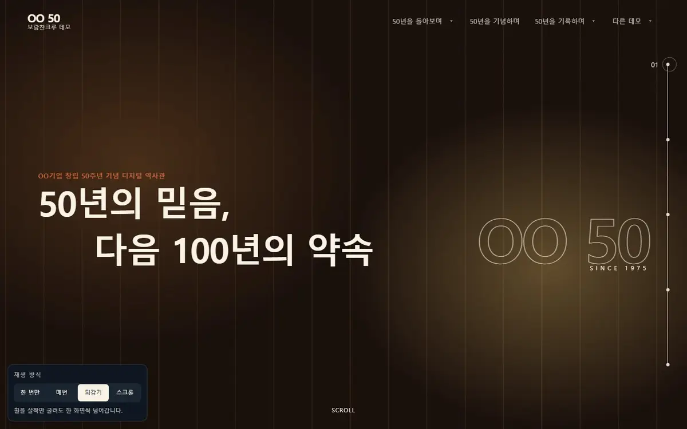
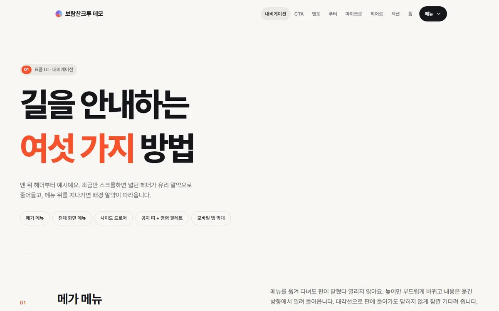
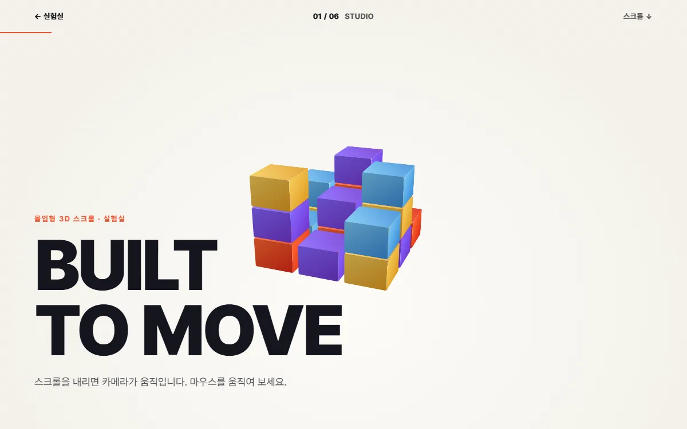
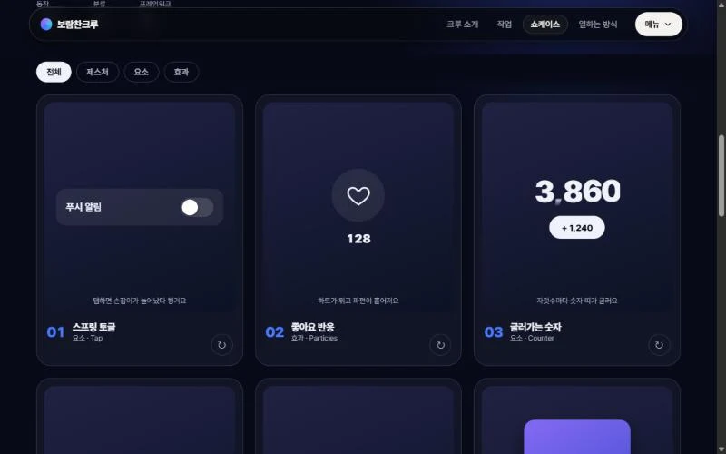
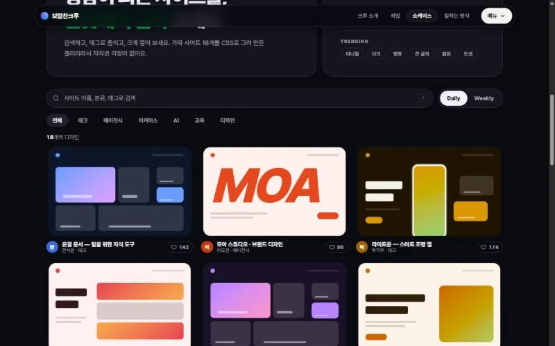
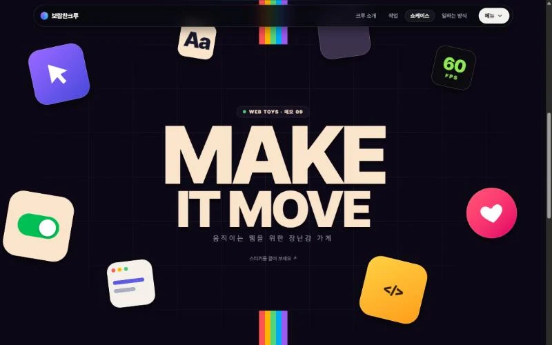

SHOWCASE보람찬크루 · 쇼케이스
먼저 만들어 보고,검증된 것만 씁니다
실제 사이트에 넣기 전에 부품과 움직임을 데모로 만들어 휴대폰·PC에서 확인해요. 모두 크루 공통 컨벤션으로 만들었고, 직접 눌러 볼 수 있어요.
01
쇼케이스
새 작업에 쓸 부품과 움직임을 먼저 만들어 보는 곳. 분류를 골라 눌러서 써 보세요.
인기
맞는 데모가 없어요. 다른 말로 찾아보세요.

UI 키트 shadcn/ui의 디자인과 인터랙션을 옮긴 기본 부품 12종. 라이트·다크 모드.
인터랙션 효과 숫자 회전 카운터, 풀페이지, 무한 슬라이더, 모션 탭, 스포트라이트 카드.
스크롤 인터랙션 부드러운 스크롤·섹션 넘김·패럴랙스를 실제 페이지 구조에서 봅니다.
디지털 역사관 구성 풀페이지 메인과 연대기 하위 페이지. 효과 재생 방식을 골라 봅니다.
요즘 UI 내비게이션·CTA·벤토·푸터·마이크로·히어로·섹션·폼 8쪽.
몰입형 3D 스크롤 스튜디오 6장면에 링 갤러리·비행·방 안 3쪽을 더한 CSS 3D 스크롤 모음.
마이크로 모션 갤러리 토글·좋아요·바텀시트·스와이프·당겨서 새로고침까지, 앱에서 느껴지는 작은 움직임 12가지.
큐레이션 갤러리 검색·Daily/Weekly 전환·트렌딩 태그·상세 창까지, 디자인 영감 갤러리의 구조를 가짜 사이트 18점으로 만든 데모.
떠다니는 오브젝트 거대한 글자 주위로 기울어진 스티커가 떠다니는 히어로. 마우스에 깊이감이 생기고 끌었다 놓으면 스프링처럼 돌아와요.